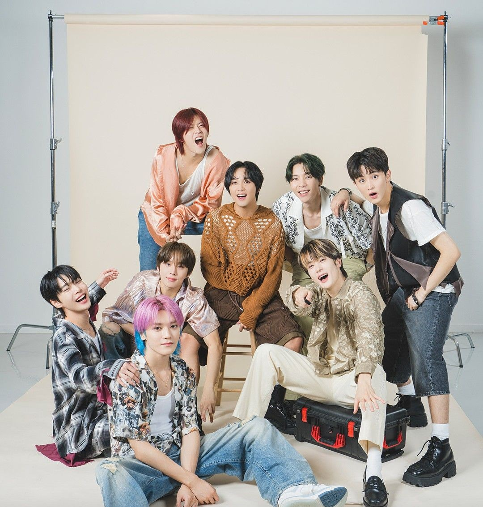
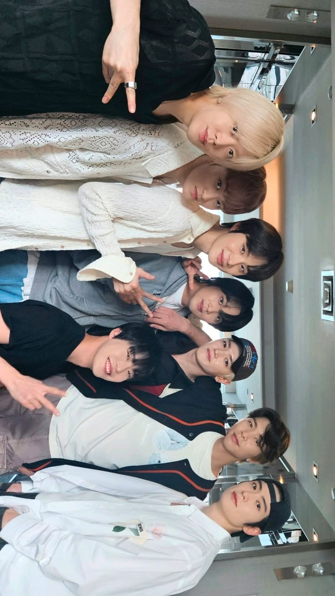

NCT 127
" Neo Culture, Limitless Vision "
NCT 127 adalah sub-unit pertama dari NCT yang berbasis di Seoul, Korea Selatan. Grup ini dikenal dengan gaya musik yang kuat, eksperimental, dan penuh karisma, menggabungkan unsur hip-hop, R&B, serta pop modern dengan konsep neo futuristic yang khas. Nama “127” sendiri berasal dari koordinat garis bujur kota Seoul, menandakan akar global mereka yang dimulai dari Korea.

About

NCT 127 adalah sub-unit kedua dari boygroup NCT di bawah SM Entertainment yang debut pada tahun 2016 dengan lagu Fire Truck. Nama “127” diambil dari koordinat bujur kota Seoul, yang menjadi basis utama mereka. Unit ini dikenal dengan konsep yang kuat, eksperimental, dan menonjolkan karakter urban yang menggambarkan dinamika kehidupan di kota besar.
Seiring perjalanan kariernya, NCT 127 terus menunjukkan musikalitas yang unik dengan menggabungkan berbagai genre seperti hip-hop, R&B, hingga pop elektronik. Setiap comeback mereka menghadirkan konsep visual dan koreografi yang intens, menunjukkan identitas khas NCT 127 sebagai grup dengan performa panggung yang energik dan berkarisma. Gaya mereka yang berani dan inovatif membuat NCT 127 menjadi salah satu grup K-pop paling menonjol di generasi keempat.
Dengan lagu-lagu hits seperti Cherry Bomb, Kick It, Sticker, dan Fact Check, NCT 127 berhasil menorehkan prestasi global, termasuk penampilan di acara musik internasional dan tur dunia di berbagai negara. Fanbase mereka, yang disebut NCTzen (127zens), terus tumbuh pesat dan menjadi bagian penting dalam kesuksesan grup ini di kancah musik dunia.
Debut : 7 Juli 2016
Label : SM Entertainment
Fans : NCTzen (127zen)
Lagu Populer : Fire Truck, Cherry Bomb, Kick It, Fact Check
Awards
GGrand Prize (Daesang)
Seoul Music Awards 31st (2022) untuk NCT 127.
Bonsang (Main Award)
Seoul Music Awards 31st (2022) untuk NCT 127.
Best Artist (Group)
K‑World Dream Awards 2024 untuk NCT 127.
Bonsang (Main Prize)
K-World Dream Awards 2024 termasuk NCT 127 sebagai penerima.
Daesang “Stage of the Year”
Asia Artist Awards 2024 untuk NCT 127.
Members
Diskografi
"Albums"
"Most Viewed MVs"